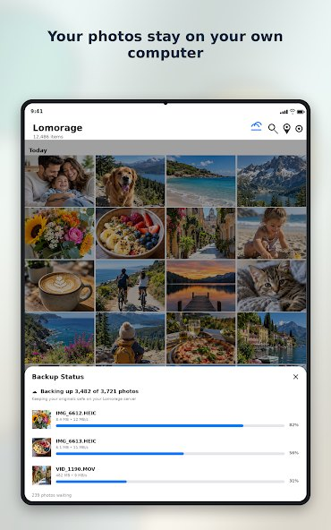
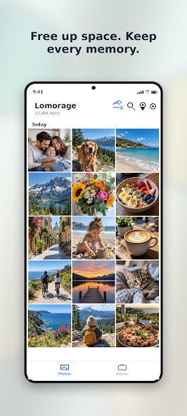
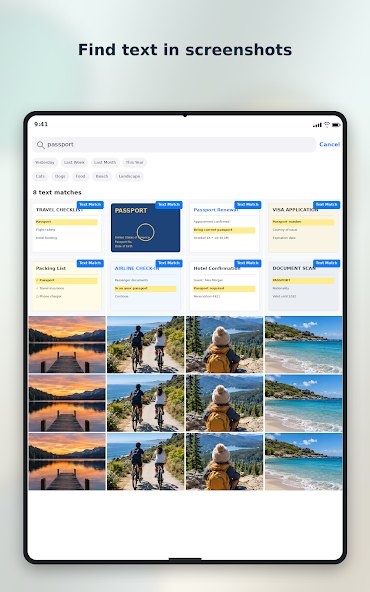

Lomorage automatically backs up photos and videos from your iPhone or Android to your own computer or NAS over home Wi-Fi. No cloud, no monthly fee, no renting your own memories back.
Desktop app free · Phone app $1.99 once · No subscription, ever



New photos and videos are copied to your own computer or NAS over home Wi-Fi. Choose Wi-Fi-only, charging-only or nighttime backups, and which folders to include.
Full-resolution photos and videos, iPhone Live Photos included, with capture details preserved. No compression, no resized copies.
Describe a scene, or find photos by person, place, or the words inside screenshots and receipts. The AI search can run on your phone — nothing has to leave your house.
Separate accounts for each family member, one home library. When a phone fills up, Free Up Space removes the big files that are already safely backed up.
The free desktop app runs on the Windows PC or Mac you already have. Already own a NAS or a Raspberry Pi? Setup guides cover those too.
Install the phone app, scan the setup code on your computer, create your account and pick where photos live.
That's it. Tonight's photos are home by bedtime, and every family member can join with their own account.
Free
Runs on your Windows PC, Mac, NAS or Raspberry Pi and stores your family's photos on your own drives.
$1.99 once
For iPhone and Android. Paid once, yours forever. No subscription, no premium tier, no monthly storage bill.
Yes — to back up or to view originals, your computer or NAS needs to be on and reachable on your home network during backup. Most families just leave the home computer on, or schedule nighttime backups.
Yes. Free Up Space removes large local files that have already been backed up, once you have confirmed the backup is complete and the originals open correctly.
Local storage is not a guarantee against loss — drives can fail. Keep a second copy of irreplaceable photos on a separate drive and check it now and then. We say the same in our own FAQ at lomorage.com.
Phones: iPhone and Android. Storage: a Windows PC, a Mac, a supported NAS, or a Raspberry Pi — hardware most homes already own.